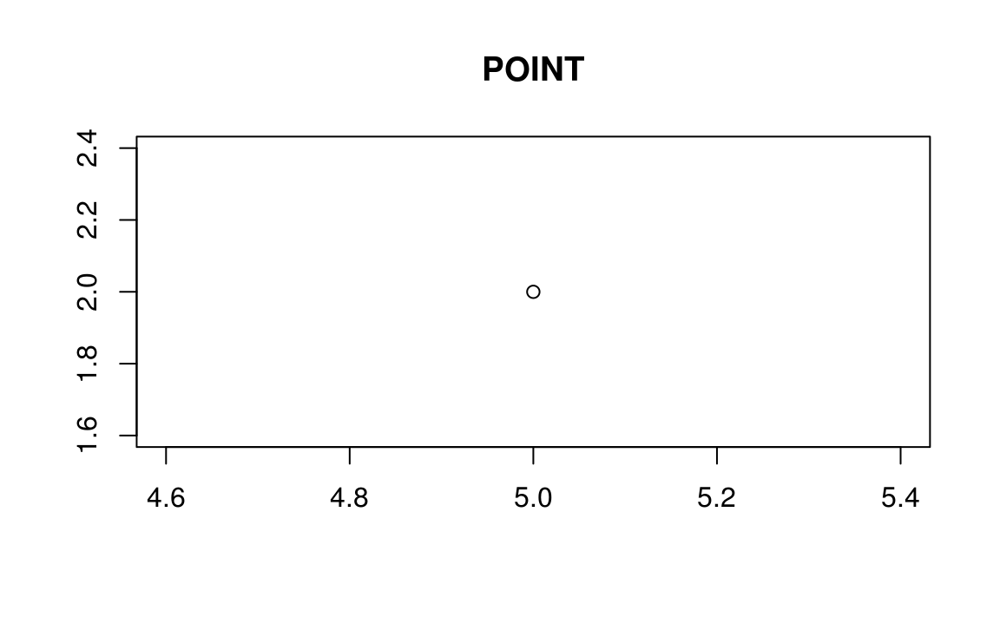
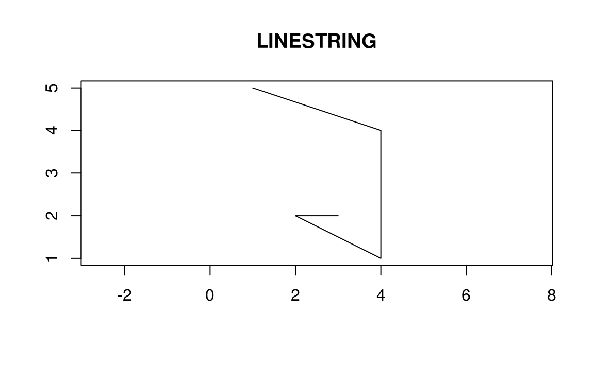
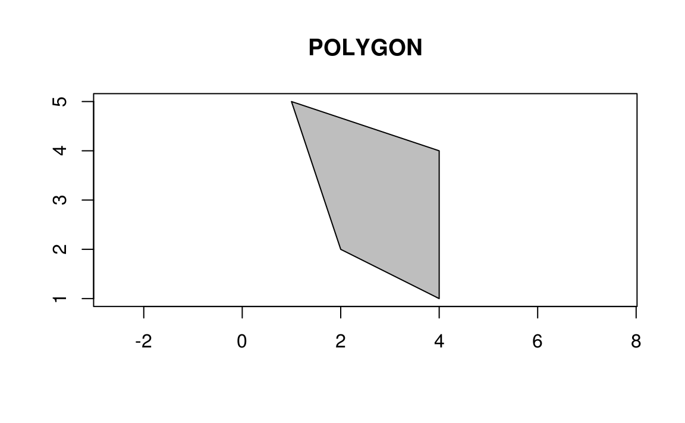
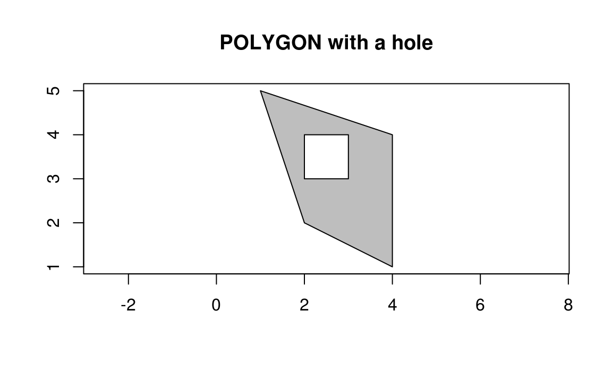
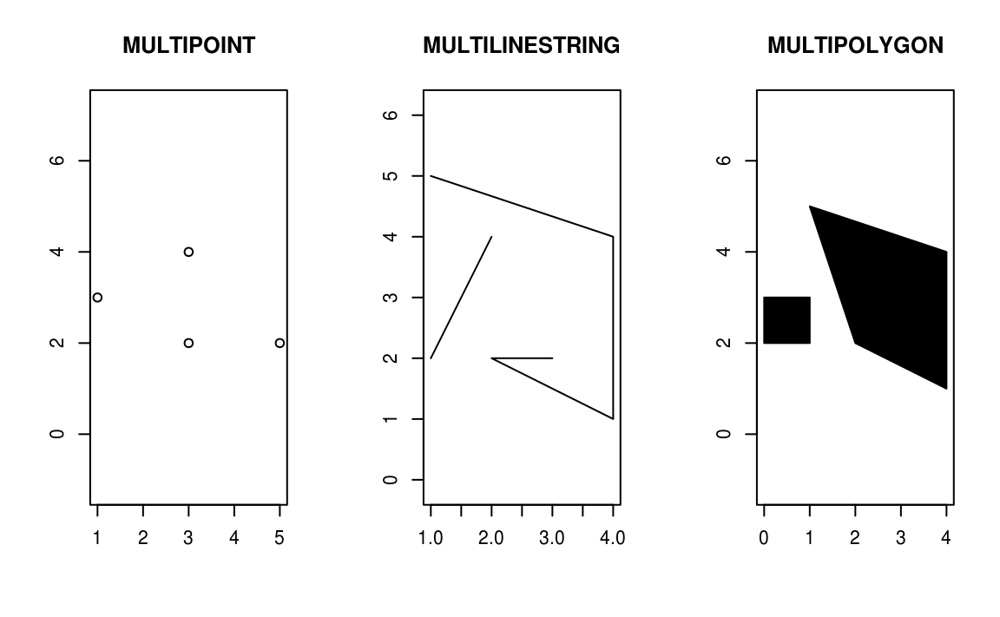
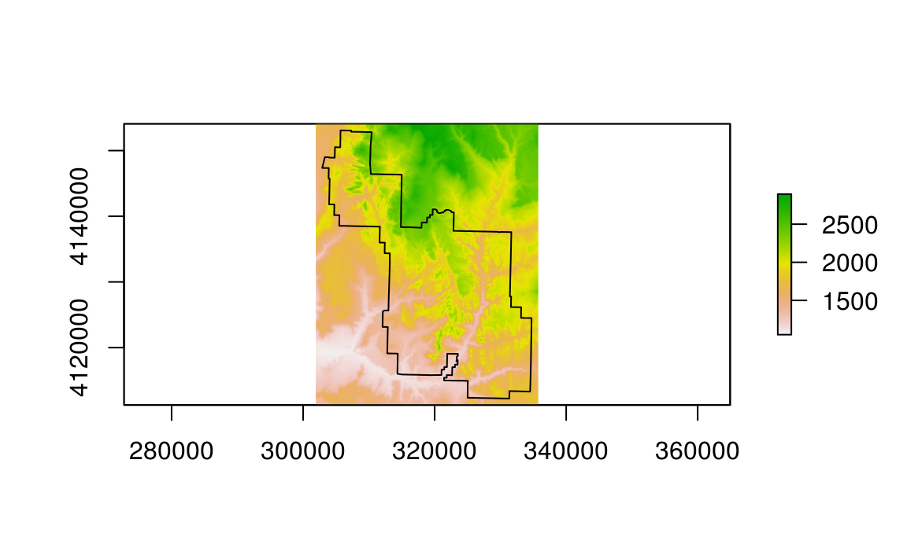

2 Geographic data in R
Prerequisites
This is the first practical chapter of the book, and therefore it comes with some software requirements. We assume that you have installed on your computer a recent version of R and that you are comfortable using it at the command line, e.g., via an integrated development environment (IDE) such as RStudio (recommended). R/RStudio works on all major operating systems. You can install and set up both in a few minutes on most modern computers, as described in section 2.3 and section 2.5 of Gillespie and Lovelace (2016) (other guides are available).
If you are not a regular R user, we recommend that you familiarize yourself with the language before proceeding with this chapter. You can do so using resources such as Gillespie and Lovelace (2016), Grolemund and Wickham (2016) as well as online interactive guides such as DataCamp. It is also worth to spend time to establish an efficient programming workflow, for example with the help of an RStudio ‘project’. Subsequently, you can use the RStudio project provided in the root directory of the geocompr GitHub repository. This will make it easier to run this book’s worked examples on your computer.
After having successfully installed R, you have to install and load add-on packages to handle spatial data. On Mac and Linux operating systems there are a few additional requirements: see the README of the sf package for instructions. The sf, raster, spData, and spDataLarge packages used in this chapter can be installed and loaded with the following commands:
install.packages("sf")
install.packages("raster")
install.packages("spData")
library(sf)
library(raster)
library(spData)
install.packages("spDataLarge")
library(spDataLarge)This chapter will provide brief explanations of the fundamental geographic data models: vector and raster. We will introduce briefly the theory behind both data models, and then move quickly towards how these are implemented in R. Vector and raster models are vital to geospatial analysis (Longley 2015). The vector data model represents the world using points, lines and polygons. This means, it supports data with discrete, well-defined borders. Generally, vector datasets have a high level of precision (but not necessarily accuracy as we will see in 2.4). On the other hand, the raster data model is good at representing continuous phenomena such as elevation or rainfall with the help of grid cell that break the surface up into a cells of constant size (resolution). Rasters, therefore, aggregate spatially specific features to a given resolution resulting in small features being blurred or lost. Naturally, it depends on your discipline if you more often user raster or vector data:
- Vector data tends to dominate the social sciences because human settlements and boundaries have discrete borders.
- By contrast, raster data often dominates the environmental sciences because these often use remotely sensed imagery.
However, there is a substantial level of overlap: ecologists and demographers, for example, commonly use both vector and raster data. We, therefore, strongly recommend learning about each data model before proceeding to understand how to manipulate them in subsequent chapters. This book uses sf and raster packages to work with vector data and raster datasets respectively.
2.1 Vector data
The geographic vector model is based on points that are located on a Cartesian (or geographic) coordinate system.12 Typically, a point consists of an x and a y value. These two numbers simply represent the distance from the \(origin\) along the \(x\) (horizontal) and \(y\) (vertical) axis in Euclidean space.13 In mathematical notation these points are typically represented as numbers separated by commas and enclosed by a pair of brackets: \((1, 3)\) for example, represents a point located one unit to the right and three units above the origin. Instead of creating these points manually, one would commonly read-in data with functions such as read_csv() from the tidyverse or read_sf() from the sf package (see chapter 5). To generate new data (e.g., for testing), one can use the command c() (think of ‘c’ for ‘combine’), as illustrated below:14
p = c(1, 3)Now this can be plotted in Cartesian space, as illustrated in figure 2.1:
plot(x = p[1], y = p[2], xlim = c(0, 5), ylim = c(0, 5))
Figure 2.1: Illustration of vector point data in base R.
2.1.1 An introduction to simple features
Simple features is an open standard developed and endorsed by the Open Geospatial Consortium (OGC) to represent a wide range of geographical information. It is a hierarchical data model that simplifies geographic data by condensing a complex range of geographic forms into a single geometry class. Only 7 out of 68 possible types of simple feature are currently used in the vast majority of GIS operations (Figure 2.2). The R package sf (Pebesma 2017) fully supports all of these (including plotting methods etc.).15
.](figures/sf-classes.png)
Figure 2.2: The subset of the Simple Features class hierarchy supported by sf. Figure based on the Open Geospatial Consortium document 06-103r4.
sf can represent all common vector geometry types (raster data classes are not supported by sf): points, lines, polygons and their respective ‘multi’ versions (which group together features of the same type into a single feature). sf also supports geometry collections, which can contain multiple geometry types in a single object. Given the breadth of geographic data forms, it may come as a surprise that a class system to support all of them is provided in a single package, which can be installed from CRAN:16 sf incorporates the functionality of the three main packages of the sp paradigm (sp (Pebesma and Bivand 2017) for the class system, rgdal (Bivand, Keitt, and Rowlingson 2017) for reading and writing data, rgeos (Bivand and Rundel 2017) for spatial operations undertaken by GEOS) in a single, cohesive whole. This is well-documented in sf’s vignettes:
vignette("sf1") # for an introduction to the package
vignette("sf2") # for reading, writing and converting Simple Features
vignette("sf3") # for manipulating Simple FeaturesAs the first vignette explains, simple feature objects in R are stored in a data frame, with geographic data occupying a special column, a ‘list-column’. This column is usually named ‘geom’ or ‘geometry’. Let us load a ‘real world’ example, here the world dataset, with the help of the spData package:
library(spData)spData silently loaded the world dataset (and many other spatial datasets - see the spData website for a full list). This dataset contains spatial and non-spatial information, as shown by the function names(), which reports the column headings in data frames. Please note that the last column contains the geographic information:
names(world)
#> [1] "iso_a2" "name_long" "continent" "region_un" "subregion"
#> [6] "type" "area_km2" "pop" "lifeExp" "gdpPercap"
#> [11] "geom"It is the contents of this modest-looking geom column that gives sf objects their spatial powers. This so-called list-column contains all the coordinates. sf’s plot() method uses these coordinates to create a map (Figure 2.3).
library(sf) # must be loaded to plot sf objects
#> Linking to GEOS 3.5.0, GDAL 2.1.0, proj.4 4.8.0
plot(world)
#> Warning: plotting the first 9 out of 10 attributes; use max.plot = 10 to
#> plot allFigure 2.3: A spatial plot of the world using the sf package, with a facet for each attribute.
Note that instead of creating a single map, as most GIS programs would, the plot() command has created multiple maps, one for each variable in the world datasets. This behavior can be useful for exploring the spatial distribution of different variables and is discussed further in 2.1.3 below.
Being able to treat spatial objects as regular data frames with spatial powers has many advantages, especially if you are already used to working with data frames. The commonly used summary() function, for example, provides a useful overview of the variables within the world object.
summary(world["lifeExp"])
#> lifeExp geom
#> Min. :48.9 MULTIPOLYGON :177
#> 1st Qu.:64.3 epsg:4326 : 0
#> Median :72.8 +proj=long...: 0
#> Mean :70.6
#> 3rd Qu.:77.1
#> Max. :83.6
#> NA's :9Although we have only selected one variable for the summary command, it also outputs an report on the geometry (we explore such ‘attribute operations’ in more depth in Chapter 3). This is due to the sticky behavior of the geometry columns of sf objects (see Chapter 3). Hence, the result provides a quick summary of both the non-spatial and spatial data contained in world: the average life expectancy is 73 years (ranging from less than 50 to more than 80 years) across all countries which are represented in the form of MULTIPOLYGONs. MULTIPOLYGONs allow more than one polygon per row (here: country). This representation is necessary for countries with many islands such as Indonesia and Greece.
It is worth taking a deeper look at the basic behavior and contents of this simple feature object, which can usefully be thought of as a ’Spatial dataFrame).
sf objects are easy to subset. The code below shows its first two rows and three columns. The output shows two major differences compared with a regular data.frame: the inclusion of additional geographic data (geometry type, dimension, bbox and CRS information - epsg (SRID), proj4string), and the presence of final geometry column:
world[1:2, 1:3]
#> Simple feature collection with 2 features and 3 fields
#> geometry type: MULTIPOLYGON
#> dimension: XY
#> bbox: xmin: 11.6401 ymin: -17.93064 xmax: 75.15803 ymax: 38.48628
#> epsg (SRID): 4326
#> proj4string: +proj=longlat +datum=WGS84 +no_defs
#> iso_a2 name_long continent geom
#> 1 AF Afghanistan Asia MULTIPOLYGON (((61.21081709...
#> 2 AO Angola Africa MULTIPOLYGON (((16.32652835...All this may seem rather complex, especially for a class system that is supposed to be simple. However, there are good reasons for organizing things this way and using sf.
2.1.2 Why Simple Features?
There are many advantages of sf over sp, including:
- Faster reading and writing of data (more than 10 times faster in some cases)
- Better plotting performance
- sf objects can be treated as data frames in most operations
- sf functions can be combined using
%>%operator and works well with the tidyverse collection of R packages - sf function names are relatively consistent and intuitive (all begin with
st_) compared with the function names and syntax of the sp, rgdal and rgeos packages that it supersedes.
A broader advantage is that simple features are so well-supported by other software products, not least PostGIS, which has heavily influenced the design of sf.
A disadvantage you should be aware of, however, is that sf is not feature complete and that it continues to evolve. The transition from sp to sf will likely take many years, and many spatial packages may never switch. Even if you discover spatial data with R through the sf package, it is still worth at least being aware of sp classes, even if you rarely use them for everyday geospatial tasks.
Fortunately it is easy to translate between sp and sf using the as() function:
library(sp)
world_sp = as(object = world, Class = "Spatial")Bivand, Pebesma, and Gómez-Rubio (2013) provides an excellent introduction to sp.
2.1.3 Basic map making
You can quickly create basic maps in sf with the base plot() function. By default, sf creates a multi-panel plot (like sp’s spplot()), one sub-plot for each variable (see left-hand image in Figure 2.4).
plot(world[3:4])
plot(world["pop"])

Figure 2.4: Plotting with sf, with multiple variables (left) and a single variable (right).
As with sp, you can add further layers to your maps using the add = TRUE-argument of the plot() function .17 To illustrate this, and prepare for content covered in chapters 3 and 4 on attribute and spatial data operations, we will subset and combine countries in the world object, which creates a single object representing Asia:
asia = world[world$continent == "Asia", ]
asia = st_union(asia)We can now plot the Asian continent over a map of the world. Note, however, that this only works if the initial plot has only one layer:
plot(world["pop"])
plot(asia, add = TRUE, col = "red")Figure 2.5: A plot of Asia added as a layer on top of countries worldwide.
This can be very useful for quickly checking the geographic correspondence between two or more layers: the plot() function is fast to execute and requires few lines of code, but does not create interactive maps with a wide range of options. For more advanced map making we recommend using a dedicated visualization package such as tmap, ggplot2, mapview, or leaflet.
2.1.3.1 Further work
sf simplifies spatial data objects compared with sp and provides a near-direct interface to GDAL and GEOS C++ functions. In theory this should make sf faster than sp/rgdal/rgeos, something that is tested in Chapter 5 for data I/O. This section introduces sf classes in preparation for subsequent chapters which deal with vector data (in particular Chapter 4).
As a final exercise, we will see one way of how to do a spatial overlay in sf. First, we convert the countries of the world into centroids, and then subset those in Asia. Finally, the summary-command tells us how many centroids (countries) are part of Asia (43) and how many are not (134).
world_centroids = st_centroid(world)
#> Warning in st_centroid.sfc(st_geometry(x), of_largest_polygon =
#> of_largest_polygon): st_centroid does not give correct centroids for
#> longitude/latitude data
sel_asia = st_intersects(world_centroids, asia, sparse = FALSE)
#> although coordinates are longitude/latitude, it is assumed that they are planar
summary(sel_asia)
#> V1
#> Mode :logical
#> FALSE:134
#> TRUE :43Note: st_intersects() uses GEOS in the background for the spatial overlay operation (see also Chapter 4).
Since sf’s plot() function builds on base plotting methods, you may also use its many optional arguments (see ?plot and ?par). This provides powerful but not necessarily intuitive functionality. For instance, in order to make the diameter of a circle proportional to a country’s population, we provide the cex argument with the result of a calculation (see Figure 2.6, and the code below).
plot(world["continent"])
plot(world_centroids, add = TRUE, cex = world$pop / 1e8, lwd = 3)Figure 2.6: Centroids representing country population, diameter being proportional to population.
2.1.4 Simple feature classes
To understand new data formats in depth, it often helps to build them from the ground up. This section walks you through vector spatial classes step-by-step, from the elementary simple feature geometry to simple feature objects of class sf representing complex spatial data. Before describing each geometry type that the sf package supports, it is worth taking a step back to understand the building blocks of sf objects. As stated in section 2.1.1, simple features are simply data frames with at least one special column that makes it spatial. These spatial columns are often called geom or geometry and can be like non-spatial columns: world$geom refers to the spatial element of the world object described above. These geometry columns are ‘list columns’ of class sfc: they are simple feature collections. In turn, sfc objects are composed of one or more objects of class sfg: simple feature geometries.
To understand how the spatial components of simple features work, it is vital to understand simple feature geometries. For this reason we cover each currently supported sfg type in the next subsections before moving on to describe how these can be combined to form sfc and eventually full sf objects.
2.1.4.1 Simple feature geometry types
Geometries are the basic building blocks of simple features. Simple features in R can take on one of the 17 geometry types supported by the sf package. In this chapter we will focus on the seven most commonly used types: POINT, LINESTRING, POLYGON, MULTIPOINT, MULTILINESTRING, MULTIPOLYGON and GEOMETRYCOLLECTION. Find the whole list of possible feature types in the PostGIS manual.
Generally, well-known binary (WKB) or well-known text (WKT) are the standard encoding for simple feature geometries. WKB representations are usually hexadecimal strings easily readable for computers. This is why, GIS and spatial databases use WKB to transfer and store geometry objects. WKT, on the other hand, is a human-readable text markup description of simple features. Both formats are exchangeable, and if we present one, we will naturally choose the WKT representation.
The basis for each geometry type is the point. A point is simply a coordinate in 2D, 3D or 4D space (see vignette("sf1") for more information) such as:
POINT (5 2)

A linestring is a sequence of points with a straight line connecting the points, for example:
LINESTRING (1 5, 4 4, 4 1, 2 2, 3 2)

A polygon is a sequence of points that form a closed, non-intersecting ring. Closed means that the first and the last point of a polygon have the same coordinates. By definition, a polygon has one exterior boundary (outer ring) and can have zero or more interior boundaries (inner rings), also known as holes.
- Polygon without a hole -
POLYGON ((1 5, 2 2, 4 1, 4 4, 1 5))

- Polygon with one hole -
POLYGON ((1 5, 4 4, 4 1, 2 2, 1 5), (2 4, 3 4, 3 3, 2 3, 2 4))

So far, our geometry types have just included one feature. To represent multiple features in one object, we can use the “multi”-version of each geometry type:
- Multipoint -
MULTIPOINT (5 2, 1 3, 3 4, 3 2) - Multistring -
MULTILINESTRING ((1 5, 4 4, 4 1, 2 2, 3 2), (1 2, 2 4)) - Multipolygon -
MULTIPOLYGON ((1 5, 4 4, 4 1, 2 2, 1 5), (0 2, 1 2, 1 3, 0 3, 0 2))

Finally, a geometry collection might contain any combination of geometry types:
- Geometry collection -
GEOMETRYCOLLECTION (MULTIPOINT (5 2, 1 3, 3 4, 3 2), LINESTRING (1 5, 4 4, 4 1, 2 2, 3 2)))

2.1.4.2 Simple feature geometry (sfg) objects
In R, the sfg class represents the different simple feature geometry types: (multi-)point, (multi-)linestring, (multi-)polygon or geometry collection.
Usually you are spared the tedious task of creating geometries on your own since you can simply import an already existing spatial file. However, there are a set of function to create simple feature geometry objects (sfg) from scratch if needed. The names of these functions are simple and consistent, as they all start with the st_ prefix and end with the name of the geometry type in lowercase letters:
- A point -
st_point() - A linestring -
st_linestring() - A polygon -
st_polygon() - A multipoint -
st_multipoint() - A multilinestring -
st_multilinestring() - A multipolygon -
st_multipolygon() - A geometry collection -
st_geometrycollection()
In R, you create sfg objects with the help of three native data types:
- A numeric vector - a single point
- A matrix - a set of points, where each row contains a point - a multipoint or linestring
- A list - any other set, e.g. a multilinestring or geometry collection
To create point objects, we use the st_point() function in conjunction with a numeric vector:
# note that we use a numeric vector for points
st_point(c(5, 2)) # XY point
#> POINT (5 2)
st_point(c(5, 2, 3)) # XYZ point
#> POINT Z (5 2 3)
st_point(c(5, 2, 1), dim = "XYM") # XYM point
#> POINT M (5 2 1)
st_point(c(5, 2, 3, 1)) # XYZM point
#> POINT ZM (5 2 3 1)XY, XYZ and XYZM types of points are automatically created based on the length of a numeric vector. Only the XYM type needs to be specified using a dim argument.
By contrast, use matrices in the case of multipoint (st_multipoint()) and linestring (st_linestring()) objects:
# the rbind function simplifies the creation of matrices
## MULTIPOINT
multipoint_matrix = rbind(c(5, 2), c(1, 3), c(3, 4), c(3, 2))
st_multipoint(multipoint_matrix)
#> MULTIPOINT (5 2, 1 3, 3 4, 3 2)
## LINESTRING
linestring_matrix = rbind(c(1, 5), c(4, 4), c(4, 1), c(2, 2), c(3, 2))
st_linestring(linestring_matrix)
#> LINESTRING (1 5, 4 4, 4 1, 2 2, 3 2)Finally, use lists for the creation of multilinestrings, (multi-)polygons and geometry collections:
## POLYGON
polygon_list = list(rbind(c(1, 5), c(2, 2), c(4, 1), c(4, 4), c(1, 5)))
st_polygon(polygon_list)
#> POLYGON ((1 5, 2 2, 4 1, 4 4, 1 5))## POLYGON with a hole
polygon_border = rbind(c(1, 5), c(2, 2), c(4, 1), c(4, 4), c(1, 5))
polygon_hole = rbind(c(2, 4), c(3, 4), c(3, 3), c(2, 3), c(2, 4))
polygon_with_hole_list = list(polygon_border, polygon_hole)
st_polygon(polygon_with_hole_list)
#> POLYGON ((1 5, 2 2, 4 1, 4 4, 1 5), (2 4, 3 4, 3 3, 2 3, 2 4))## MULTILINESTRING
multilinestring_list = list(rbind(c(1, 5), c(4, 4), c(4, 1), c(2, 2), c(3, 2)),
rbind(c(1, 2), c(2, 4)))
st_multilinestring((multilinestring_list))
#> MULTILINESTRING ((1 5, 4 4, 4 1, 2 2, 3 2), (1 2, 2 4))## MULTIPOLYGON
multipolygon_list = list(list(rbind(c(1, 5), c(2, 2), c(4, 1), c(4, 4), c(1, 5))),
list(rbind(c(0, 2), c(1, 2), c(1, 3), c(0, 3), c(0, 2))))
st_multipolygon(multipolygon_list)
#> MULTIPOLYGON (((1 5, 2 2, 4 1, 4 4, 1 5)), ((0 2, 1 2, 1 3, 0 3, 0 2)))## GEOMETRYCOLLECTION
gemetrycollection_list = list(st_multipoint(multipoint_matrix),
st_linestring(linestring_matrix))
st_geometrycollection(gemetrycollection_list)
#> GEOMETRYCOLLECTION (MULTIPOINT (5 2, 1 3, 3 4, 3 2), LINESTRING (1 5, 4 4, 4 1, 2 2, 3 2))2.1.4.3 Simple feature collections
One sfg object contains only a single simple feature geometry. A simple feature collection (sfc) is a list of sfg objects and can additionally contain information about the coordinate reference system in use. For instance, to combine two simple features into one object with two features, we can use the st_sfc() function. This is important since this collection represents the geometry column in sf data frames:
# sfc POINT
point1 = st_point(c(5, 2))
point2 = st_point(c(1, 3))
st_sfc(point1, point2)
#> Geometry set for 2 features
#> geometry type: POINT
#> dimension: XY
#> bbox: xmin: 1 ymin: 2 xmax: 5 ymax: 3
#> epsg (SRID): NA
#> proj4string: NA
#> POINT (5 2)
#> POINT (1 3)In most cases, an sfc object contains objects of the same geometry type. Therefore, when we convert sfg objects of type polygon into a simple feature collection, we would also end up with an sfc object of type polygon. Equally, a collection of multilinestrings would result in an sfc object of type multilinestring:
# sfc POLYGON
polygon_list1 = list(rbind(c(1, 5), c(2, 2), c(4, 1), c(4, 4), c(1, 5)))
polygon1 = st_polygon(polygon_list)
polygon_list2 = list(rbind(c(0, 2), c(1, 2), c(1, 3), c(0, 3), c(0, 2)))
polygon2 = st_polygon(polygon_list2)
st_sfc(polygon1, polygon2)
#> Geometry set for 2 features
#> geometry type: POLYGON
#> dimension: XY
#> bbox: xmin: 0 ymin: 1 xmax: 4 ymax: 5
#> epsg (SRID): NA
#> proj4string: NA
#> POLYGON ((1 5, 2 2, 4 1, 4 4, 1 5))
#> POLYGON ((0 2, 1 2, 1 3, 0 3, 0 2))# sfc MULTILINESTRING
multilinestring_list1 = list(rbind(c(1, 5), c(4, 4), c(4, 1), c(2, 2), c(3, 2)),
rbind(c(1, 2), c(2, 4)))
multilinestring1 = st_multilinestring((multilinestring_list1))
multilinestring_list2 = list(rbind(c(2, 9), c(7, 9), c(5, 6), c(4, 7), c(2, 7)),
rbind(c(1, 7), c(3, 8)))
multilinestring2 = st_multilinestring((multilinestring_list2))
st_sfc(multilinestring1, multilinestring2)
#> Geometry set for 2 features
#> geometry type: MULTILINESTRING
#> dimension: XY
#> bbox: xmin: 1 ymin: 1 xmax: 7 ymax: 9
#> epsg (SRID): NA
#> proj4string: NA
#> MULTILINESTRING ((1 5, 4 4, 4 1, 2 2, 3 2), (1 ...
#> MULTILINESTRING ((2 9, 7 9, 5 6, 4 7, 2 7), (1 ...It is also possible to create an sfc object from sfg objects with different geometry types:
# sfc GEOMETRY
st_sfc(point1, multilinestring1)
#> Geometry set for 2 features
#> geometry type: GEOMETRY
#> dimension: XY
#> bbox: xmin: 1 ymin: 1 xmax: 5 ymax: 5
#> epsg (SRID): NA
#> proj4string: NA
#> POINT (5 2)
#> MULTILINESTRING ((1 5, 4 4, 4 1, 2 2, 3 2), (1 ...As mentioned before, sfc objects can additionally store information on the coordinate reference systems (CRS). To specify a certain CRS, we can use the epsg (SRID) or proj4string attributes of an sfc object. The default value of epsg (SRID) and proj4string is NA (Not Available):
st_sfc(point1, point2)
#> Geometry set for 2 features
#> geometry type: POINT
#> dimension: XY
#> bbox: xmin: 1 ymin: 2 xmax: 5 ymax: 3
#> epsg (SRID): NA
#> proj4string: NA
#> POINT (5 2)
#> POINT (1 3)Of course, all geometries in an sfc object must have the same CRS.
We can add coordinate reference system as a crs argument of st_sfc(). This argument accepts either an integer with the epsg code (e.g., 4326) or a proj4string character string (e.g., "+proj=longlat +datum=WGS84 +no_defs"):
# EPSG definition
st_sfc(point1, point2, crs = 4326)
#> Geometry set for 2 features
#> geometry type: POINT
#> dimension: XY
#> bbox: xmin: 1 ymin: 2 xmax: 5 ymax: 3
#> epsg (SRID): 4326
#> proj4string: +proj=longlat +datum=WGS84 +no_defs
#> POINT (5 2)
#> POINT (1 3)# PROJ4STRING definition
st_sfc(point1, point2, crs = "+proj=longlat +datum=WGS84 +no_defs")
#> Geometry set for 2 features
#> geometry type: POINT
#> dimension: XY
#> bbox: xmin: 1 ymin: 2 xmax: 5 ymax: 3
#> epsg (SRID): 4326
#> proj4string: +proj=longlat +datum=WGS84 +no_defs
#> POINT (5 2)
#> POINT (1 3)Both of these approaches have advantages and disadvantages. An epsg code is usually shorter, and therefore easier to remember. The code also refers to only one, well-defined coordinate reference system. On the other hand, a proj4string definition allows you more flexibility when it comes to specifying different parameters such as the projection type, the datum and the ellipsoid. This way you can specify many different projections, and modify existing ones. This makes the proj4string approach also more complicated.18.
epsg always points to exactly one particular CRS. Correspondingly, there is also only one possible proj4string for a specific epsg-code. For example, we can set the UTM Zone 11N projection with epsg code 2955:
st_sfc(point1, point2, crs = 2955)
#> Geometry set for 2 features
#> geometry type: POINT
#> dimension: XY
#> bbox: xmin: 1 ymin: 2 xmax: 5 ymax: 3
#> epsg (SRID): 2955
#> proj4string: +proj=utm +zone=11 +ellps=GRS80 +towgs84=0,0,0,0,0,0,0 +units=m +no_defs
#> POINT (5 2)
#> POINT (1 3)As you can see above, the proj4string definition was automatically added. Now we can try to set the CRS using proj4string:
st_sfc(point1, point2, crs = "+proj=utm +zone=11 +ellps=GRS80 +towgs84=0,0,0,0,0,0,0 +units=m +no_defs")
#> Geometry set for 2 features
#> geometry type: POINT
#> dimension: XY
#> bbox: xmin: 1 ymin: 2 xmax: 5 ymax: 3
#> epsg (SRID): NA
#> proj4string: +proj=utm +zone=11 +ellps=GRS80 +towgs84=0,0,0,0,0,0,0 +units=m +no_defs
#> POINT (5 2)
#> POINT (1 3)However, the epsg string of our result remained empty. This is because there is no general method to convert from proj4string to epsg.
2.1.4.4 Simple feature objects
So far, we have only dealt with the pure geometries. Most of the time, however, these geometries come with a set of attributes describing them. These attributes could represent the name of the geometry, measured values, groups to which the geometry belongs, and many more. For example, we measured a temperature of 25°C on Trafalgar Square in London on June 21th 2017. Hence, we have a specific point in space (the coordinates), the name of the location (Trafalgar Square), a temperature value, the date of the measurement. Other attributes might include a urbanity category (city or village), or a remark if the measurement was made using an automatic station.
The simple feature class, sf, is a combination of an attribute table (data.frame) and a simple feature geometry collection (sfc). Simple features are created using the st_sf() function:
# sfg objects
london_point = st_point(c(0.1, 51.5))
ruan_point = st_point(c(-9, 53))
# sfc object
our_geometry = st_sfc(london_point, ruan_point, crs = 4326)
# data.frame object
our_attributes = data.frame(name = c("London", "Ruan"),
temperature = c(25, 13),
date = c(as.Date("2017-06-21"), as.Date("2017-06-22")),
category = c("city", "village"),
automatic = c(FALSE, TRUE))
# sf object
sf_points = st_sf(our_attributes, geometry = our_geometry)The above example illustrates the components of sf objects. Firstly, coordinates define the geometry of the simple feature geometry (sfg). Secondly, we can combine the geometries in a simple feature collection (sfc) which also stores the CRS. Subsequently, we store the attribute information on the geometries in a data.frame. Finally, the st_sf() function combines the attribute table and the sfc object in an sf object.
sf_points
#> Simple feature collection with 2 features and 5 fields
#> geometry type: POINT
#> dimension: XY
#> bbox: xmin: -9 ymin: 51.5 xmax: 0.1 ymax: 53
#> epsg (SRID): 4326
#> proj4string: +proj=longlat +datum=WGS84 +no_defs
#> name temperature date category automatic geometry
#> 1 London 25 2017-06-21 city FALSE POINT (0.1 51.5)
#> 2 Ruan 13 2017-06-22 village TRUE POINT (-9 53)class(sf_points)
#> [1] "sf" "data.frame"The result shows that sf objects actually have two classes, sf and data.frame. Simple features are simply data frames (square tables), but with spatial attributes (usually stored in a special geom list-column in the data frame). This duality is central to the concept of simple features: most of the time a sf can be treated as and behaves like a data.frame. Simple features are, in essence, data frames with a spatial extension.
2.2 Raster data

Figure 2.7: Raster data: A - a grid representation; B - numbers of the cells; C - values of the cells; D - a final raster map
The geographic raster data model consists of a raster header and a matrix (with rows and columns) representing equally spaced cells (often also called pixels; Figure 2.7:A). The raster header defines the coordinate reference system, the extent and the origin. The origin (or starting point) is frequently the coordinate of the lower-left corner of the matrix (the raster package, however, uses the upper left corner, by default (Figure 2.7:B)). The header defines the extent via the number of columns, the number of rows and the cell size resolution. Hence, starting from the origin, we can easily access and modify each single cell by either using the ID of a cell (Figure 2.7:B) or by explicitly specifying the rows and columns. This matrix representation avoids storing explicitly the coordinates for the four corner points (in fact it only stores one coordinate, namely the origin) of each cell corner as would be the case for rectangular vector polygons. This and matrix algebra makes raster processing much more efficient and faster than vector data processing. However, in contrast to vector data, a raster cell can only hold a single value. The value might be numeric or categorical (Figure 2.7:C). You can also specify a no-data value in the header of a raster, frequently -9999 (in R we often use NA). Raster maps usually represent continuous phenomena such as elevation, temperature, population density or spectral data (Figure 2.8). Of course, we can represent discrete features such as soil or landcover classes also with the help of a raster data model (Figure 2.8). Consequently, the discrete borders of these features become blurred, and depending on the spatial task a vector representation might be more suitable.

Figure 2.8: Examples of continuous (left) and categorical (right) raster
2.2.1 An introduction to raster
The raster package supports raster objects in R. It provides an extensive set of functions to create, read, export, manipulate and process raster datasets. Aside from general raster data manipulation, raster provides many low level functions that can form the basis to develop more advanced raster functionality. raster also lets you work on large raster datasets that are too large to fit into the main memory . In this case, raster provides the possibility to divide the raster into smaller chunks (rows or blocks), and processes these iteratively instead of loading the whole raster file into RAM (for more information, please refer to `vignette(“functions”, package = “raster”).
For the illustration of the raster concepts, we will use datasets from the spDataLarge package. It consists of a few raster and one vector datasets covering an area of the Zion National Park (Utah, USA). For example, srtm.tif is a digital elevation model of this area (for more details - see its documentation ?srtm) First of all, we would like to create a RasterLayer object named new_raster:
library(spDataLarge)
library(raster)
raster_filepath = system.file("raster/srtm.tif", package = "spDataLarge")
new_raster = raster(raster_filepath)Typing the name of the raster into the console, will print out the raster header (extent, dimensions, resolution, CRS) and some additional information (class, data source name, summary of the raster values):
new_raster
#> class : RasterLayer
#> dimensions : 463, 459, 212517 (nrow, ncol, ncell)
#> resolution : 73.7, 92.5 (x, y)
#> extent : 301929, 335757, 4111262, 4154089 (xmin, xmax, ymin, ymax)
#> coord. ref. : +proj=utm +zone=12 +ellps=GRS80 +towgs84=0,0,0,0,0,0,0 +units=m +no_defs
#> data source : /home/travis/R/Library/spDataLarge/raster/srtm.tif
#> names : srtm
#> values : 1050, 2895 (min, max)To access individual header information, you can use following commands:
# dimensions (number of rows, number of columns, number of cells)
dim(new_raster)
#> [1] 463 459 1# spatial resolution
res(new_raster)
#> [1] 73.7 92.5# spatial extent
extent(new_raster)
#> class : Extent
#> xmin : 301929
#> xmax : 335757
#> ymin : 4111262
#> ymax : 4154089# coordinate reference system
crs(new_raster)
#> CRS arguments:
#> +proj=utm +zone=12 +ellps=GRS80 +towgs84=0,0,0,0,0,0,0 +units=m
#> +no_defsNote that in contrast to the sf package, raster only accepts the proj4string representation of the coordinate reference system.
Sometimes it is important to know if all values of a raster are currently in memory or on disk. Find out with the inMemory() function:
inMemory(new_raster)
#> [1] FALSEhelp(package = "raster", topic = "raster-package") returns a full list of all available raster functions.
2.2.2 Basic map making
Similar to the sf package, raster also provides plot() methods for its own classes.
plot(new_raster)Moreover, it is possible to plot a raster and overlay it with vector data. For this purpose, we need to read-in a vector dataset:
vector_filepath = system.file("vector/zion.gpkg", package="spDataLarge")
new_vector = st_read(vector_filepath)Our new object, new_vector, is a polygon representing the borders of Zion National Park (?zion). We can add the borders to the elevation map using the add argument of the plot():
plot(new_raster)
plot(new_vector, add = TRUE)
There are several different approaches to plot raster data in R:
- You can use
spplot()to visualize several (such as spatiotemporal) layers at once. You can also do so with the rasterVis package which provides more advanced methods for plotting raster objects. - Packages such as tmap, mapview and leaflet facilitate especially interactive mapping of both raster and vector objects.
2.2.3 Raster classes
The RasterLayer class represents the simplest form of a raster object, and consists of only one layer. The easiest way to create a raster object in R is to read-in a raster file from disk or from a server.
raster_filepath = system.file("raster/srtm.tif", package = "spDataLarge")
new_raster = raster(raster_filepath)The raster package support numerous drivers with the help of rgdal. To find out which drivers are available on your system, run raster::writeFormats() and rgdal::gdalDrivers().
Aside from reading in a raster, you can also create one from scratch. Running raster() creates an empty RasterLayer. Here, however, we will create manually a very simple raster. This should make it easy to understand how raster and related operations work. Our raster should consist of just three rows and columns centered around the null meridian and the equator (see xmn, xmx, ymn and ymx parameters). Additionally, we define a resolution of 0.5, which here corresponds to 0.5 degrees since the default proj4string of a raster object is WGS84. Finally, we set the values with the vals argument. Here, we just number the cells, that means we assign 1 to cell 1, 2 to cell 2, and finally 36 to cell 36. We know that there are 36 cells by multiplying six (rows) by six (columns). As we have seen above, setting raster values in R corresponds to a rowwise cell filling starting at the upper left corner. Consequently, the upper first row contains the values 1 to 6, the second row 7 to 12, and the last row 31 to 36.
# creation of the RasterLayer object with a given number of columns and rows, and extent
new_raster2 = raster(nrow = 6, ncol = 6, res = 0.5,
xmn = -1.5, xmx = 1.5, ymn = -1.5, ymx = 1.5,
vals = 1:36)For still further ways of creating a raster object have a look at the help file - ?raster.
Aside from RasterLayer, there are two additional classes: RasterBrick and RasterStack. Both can handle multiple layers, but differ regarding the number of supported file formats, type of internal representation and processing speed.
A RasterBrick consists of multiple layers, which typically correspond to a multispectral satellite file. The brick() function creates a RasterBrick object. Usually, you provide it with a filename to a multilayer raster file but might also use another raster object and other spatial objects (see its help page for all supported formats).
multilayer_raster_filepath = system.file("raster/landsat.tif", package="spDataLarge")
r_brick = brick(multilayer_raster_filepath)
r_brick
#> class : RasterBrick
#> dimensions : 1428, 1128, 1610784, 4 (nrow, ncol, ncell, nlayers)
#> resolution : 30, 30 (x, y)
#> extent : 301905, 335745, 4111245, 4154085 (xmin, xmax, ymin, ymax)
#> coord. ref. : +proj=utm +zone=12 +datum=WGS84 +units=m +no_defs +ellps=WGS84 +towgs84=0,0,0
#> data source : /home/travis/R/Library/spDataLarge/raster/landsat.tif
#> names : landsat.1, landsat.2, landsat.3, landsat.4
#> min values : 7550, 6404, 5678, 5252
#> max values : 19071, 22051, 25780, 31961The nlayers function retrieves the number of layers stored in a Raster* object:
nlayers(r_brick)
#> [1] 4A RasterStack is similar to a RasterBrick in the sense that it consists also of multiple layers. More specifically, a RasterStack is a list of RasterLayer objects with the same extent and resolution. Hence, one way to create it is with the help of spatial objects already existing in R’s global environment. And again, one can simply specify a path to a file stored on disk. The possibility to create a RasterStack from a file stored on disk and an object residing in R’s global environment is one of the main differences compared to a RasterBrick.
raster_on_disk = raster(r_brick, layer = 1)
raster_in_memory = raster(xmn = 301905, xmx = 335745, ymn = 4111245, ymx = 4154085, res = 30)
values(raster_in_memory) = sample(1:ncell(raster_in_memory))
crs(raster_in_memory) = crs(raster_on_disk)r_stack <- stack(raster_in_memory, raster_on_disk)
r_stack
#> class : RasterStack
#> dimensions : 1428, 1128, 1610784, 2 (nrow, ncol, ncell, nlayers)
#> resolution : 30, 30 (x, y)
#> extent : 301905, 335745, 4111245, 4154085 (xmin, xmax, ymin, ymax)
#> coord. ref. : +proj=utm +zone=12 +datum=WGS84 +units=m +no_defs +ellps=WGS84 +towgs84=0,0,0
#> names : layer, landsat.1
#> min values : 1, 7550
#> max values : 1610784, 19071Another difference is that the processing time for RasterBrick objects should be usually shorter than for RasterStack objects. Note that operations on RasterBrick and RasterStack objects will typically return a RasterBrick.
2.3 Coordinate Reference Systems
Despite the differences between vector and raster spatial data types, they share concepts intrinsic to spatial data. Perhaps the most important of these is the Coordinate Reference System (CRS), which defines how the spatial elements of the data relate to the surface of the Earth (or other bodies).
In sf the CRS of an object can be retrieved and set using st_crs() and st_set_crs() respectively:
old_crs = st_crs(new_vector) # get CRS
old_crs # print CRS
#> $epsg
#> [1] NA
#>
#> $proj4string
#> [1] "+proj=utm +zone=12 +ellps=GRS80 +towgs84=0,0,0,0,0,0,0 +units=m +no_defs"
#>
#> attr(,"class")
#> [1] "crs"
new_vector = st_set_crs(new_vector, 4326) # set CRS
#> Warning: st_crs<- : replacing crs does not reproject data; use st_transform
#> for that
Figure 2.9: Examples of projected (left) and geographic (right) coordinate systems for a vector data type
Note the warning emitted after the CRS for sf_points was set to 27700. This is a good thing: we have imposed a spatial reference onto data without knowing what that means. To discover what the ‘magic number’ 27700 means, we can retrieve the CRS again:
st_crs(new_vector)
#> $epsg
#> [1] 4326
#>
#> $proj4string
#> [1] "+proj=longlat +datum=WGS84 +no_defs"
#>
#> attr(,"class")
#> [1] "crs"
Figure 2.10: Examples of projected (left) and geographic (right) coordinate systems for a raster data type
2.4 Units
An important feature of CRSs is that they contain information about spatial units. Clearly it is vital to know whether a house’s measurements are in feet or meters, and the same applies to maps. It is good cartographic practice to add a scale bar onto maps to demonstrate the relationship between distances on the page or screen and distances on the ground. Likewise, it is important to formally specify the units in which the geometry data or pixels are measured to provide context, and ensure that subsequent calculations are done in context.
A novel feature of geometry data in sf objects is that they have native support for units. This means that distance, area and other geometric calculations in sf return values that come with a units attribute, defined by the units package (Pebesma, Mailund, and Hiebert 2016). This is advantageous because it prevents confusion caused by the fact that different CRSs use different units (most use meters, some use feet). Furthermore, it also provides information on dimensionality, as illustrated by the following calculation which reports the area of Nigeria:
nigeria = world[world$name_long == "Nigeria", ]st_area(nigeria)
#> 9.05e+11 m^2The result is in units of square meters (m2), showing a) that the result represents two-dimensional space and b) and that Nigeria is a large country! This information, stored as an attribute (which interested readers can discover with attributes(st_area(nigeria))) is advantageous for many reasons, for example it could feed into subsequent calculations such as population density. Reporting units prevents confusion. To take the Nigeria example, if the units remained unspecified, one could incorrectly assume that the units were in km2. To translate the huge number into a more digestible size, it is tempting to divide the results by a million (the number of square meters in a square kilometer):
st_area(nigeria) / 1e6
#> 905072 m^2However, the result is incorrectly given again as square meters. The solution is to set the correct units with the units package:
units::set_units(st_area(nigeria), km^2)
#> 905072 km^2Units are of equal importance in the case of raster data. However, so far sf is the only spatial package that supports units, meaning that people working on raster data should approach changes in the units of analysis (e.g., converting pixel widths from imperial to decimal units) with care. The new_raster object (see above) uses a UTM projection with meters as units. Consequently, its resolution is also given in meters but you have to know it, since the res() function simply returns a numeric vector.
res(new_raster)
#> [1] 73.7 92.5If we used the WGS84 projection, the units would change.
library(rgdal)
repr = projectRaster(new_raster, crs = "+init=epsg:4326")
res(repr)
#> [1] 0.000831 0.000833Again, the res() command gives back a numeric vector without any unit, forcing us to know that the unit of the WGS84 projection is decimal degrees.
2.5 Exercises
- What does the summary of the
geometrycolumn tell us about theworlddataset, in terms of:
- The geometry type?
- How many countries there are?
- The coordinate reference system (CRS)?
- Using sf’s
plot()command, create a map of Nigeria in context, building on the code that creates and plots Asia above (see Figure 2.5 for an example of what this could look like).
- Hint: this used the
lwd,mainandcolarguments ofplot(). - Bonus: make the country boundaries a dotted grey line.
- Hint:
borderis an additional argument ofplot()for sf objects.
- Exercise 3
- What does the
lwdargument do in theplot()code that generates Figure 2.6. - Perform the same operations and map making for another continent of your choice.
- Bonus: Download some global geographic data and add attribute variables assigning them to the continents of the world.
References
Gillespie, Colin, and Robin Lovelace. 2016. Efficient R Programming: A Practical Guide to Smarter Programming. O’Reilly Media. https://csgillespie.github.io/efficientR/.
Grolemund, Garrett, and Hadley Wickham. 2016. R for Data Science. 1 edition. O’Reilly Media.
Longley, Paul. 2015. Geographic Information Science & Systems. Fourth edition. Hoboken, NJ: Wiley.
Pebesma, Edzer. 2017. Sf: Simple Features for R. https://CRAN.R-project.org/package=sf.
Pebesma, Edzer, and Roger Bivand. 2017. Sp: Classes and Methods for Spatial Data. https://CRAN.R-project.org/package=sp.
Bivand, Roger, Tim Keitt, and Barry Rowlingson. 2017. Rgdal: Bindings for the Geospatial Data Abstraction Library. https://CRAN.R-project.org/package=rgdal.
Bivand, Roger, and Colin Rundel. 2017. Rgeos: Interface to Geometry Engine - Open Source (GEOS). https://CRAN.R-project.org/package=rgeos.
Bivand, Roger, Edzer J Pebesma, and Virgilio Gómez-Rubio. 2013. Applied Spatial Data Analysis with R. Vol. 747248717. Springer.
Pebesma, Edzer, Thomas Mailund, and James Hiebert. 2016. “Measurement Units in R.” The R Journal 8 (2): 486–94. https://journal.r-project.org/archive/2016-2/pebesma-mailund-hiebert.pdf.
Please do not confuse the geographic data vector model with R’s
vectorclass. The latter is a data format in R such asdata.frameandmatrix. However, we can represent spatial coordinates, which are part of the geographic vector data model, using R’svectorclass.↩In 3 dimensional coordinate systems three numbers are needed for each of the three axes, \(x\), \(y\) and \(z\).↩
Other methods for generating numbers include with the
seq()function (short for ‘sequence’) for generating regular sequences orrunif(),rnorm()and other functions generating random numbers following some kind of probability distribution. The mapedit package can be used to create spatial data manually on an interactive map.↩The full OGC standard includes rather exotic geometry types including ‘surface’ and ‘curve’ geometry types, which currently have limited application in real world applications. All 68 types can be represented in R, although (at the time of writing) all methods, such as plotting, are only supported for the 7 types that are used.↩
The development version, which may contain new features, can be installed with
devtools::install_github("r-spatial/sf").↩In fact, when you
plot()an sf object, R is callingsf:::plot.sf()behind the scenes.plot()is a generic method that behaves differently depending on the class of object being plotted.↩In the background,
sfuses the PROJ.4 software, which enables transformations between different projections↩